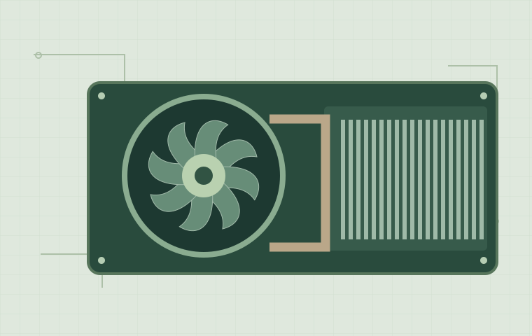
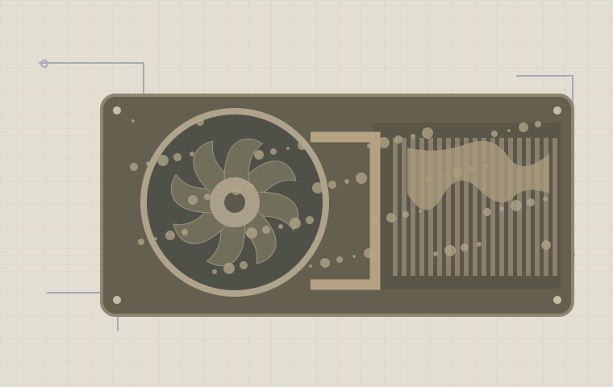

Serwis laptopów
Problemy z uruchomieniem, zalanie, uszkodzona matryca lub głośne chłodzenie. Diagnoza, naprawa i konserwacja.
- Czyszczenie i wymiana pasty
- Naprawa i wymiana podzespołów
- Instalacja systemu
Dla domu. Dla Twojej firmy.
Laptop zwolnił? Komputer nie chce się włączyć? Zaczynamy od znalezienia przyczyny, potem przedstawiamy wycenę. Ty decydujesz o naprawie.
Jeden serwis. Różne potrzeby.
01 / Co możemy zrobić
Od pojedynczej usterki do opieki nad komputerami w biurze. Dobieramy rozwiązanie do problemu.
Problemy z uruchomieniem, zalanie, uszkodzona matryca lub głośne chłodzenie. Diagnoza, naprawa i konserwacja.
Komputer do pracy, nauki lub wymagających programów. Usuwamy usterki i pomagamy dobrać sensowną rozbudowę.
Uporządkowane stanowiska pracy, kopie zapasowe i bezpieczna konfiguracja. Pomoc dla domu i małych firm.
Przykładowe stawki dla prezentowanej oferty. Dokładny koszt zależy od diagnozy, części i zakresu prac.
02 / Po Twojej stronie
Chcesz wiedzieć, co się zepsuło, ile będzie kosztować naprawa i czy ma sens. To właśnie wyjaśniamy.
Zobacz proces naprawyNajpierw diagnoza i kosztorys. Prace rozpoczynamy po zaakceptowaniu zakresu.
Naprawa, wymiana części czy nowy komputer? Porównujemy możliwości, zamiast wymieniać wszystko.
Ustalamy sposób kontaktu i informujemy, gdy diagnoza zmienia zakres lub przewidywany termin.
03 / Krok po kroku
Wiesz, co dzieje się na każdym etapie. Bez zgadywania i bez prac zleconych bez Twojej wiedzy.
Podaj model i objawy. Ustalamy przyjęcie urządzenia oraz zakres diagnozy.
Sprawdzamy przyczynę usterki i przedstawiamy koszt oraz przewidywany termin.
Po Twojej zgodzie wykonujemy ustalone prace. Dodatkowe koszty wymagają akceptacji.
Weryfikujemy działanie i przekazujemy opis wykonanych prac oraz zalecenia.
04 / Mała zmiana, duża różnica
Kurz utrudnia przepływ powietrza. Konserwacja obejmuje czyszczenie i kontrolę układu chłodzenia — bez wymiany sprawnych części na zapas.
Przesuń suwak, żeby porównać.


05 / Jasne zasady współpracy
Rzetelny serwis to też dokumentacja. Te informacje powinny towarzyszyć każdemu zleceniu.
Opis usterki, zakres naprawy i koszt do zaakceptowania przed rozpoczęciem prac.
Informacja, co zostało naprawione, wymienione lub skonfigurowane.
Wynik testów urządzenia oraz zalecenia dotyczące dalszego użytkowania.
06 / Warto wiedzieć
Nie widzisz odpowiedzi na swoje pytanie? Dodaj je do opisu problemu.
Przejdź do formularzaW sekcji usług znajdziesz przykładowe stawki. Końcowa wycena zależy od usterki, potrzebnych części i zakresu prac. Koszt diagnozy należy ustalić przed przekazaniem sprzętu.
Termin zależy od rodzaju usterki i dostępności części. Po diagnozie można ustalić przewidywany czas naprawy. Nie każdą usterkę da się usunąć tego samego dnia.
Przed przekazaniem urządzenia warto wykonać kopię ważnych plików. Operacje na dysku i ewentualną reinstalację systemu należy uzgodnić wcześniej. Sam serwis nie zastępuje kopii zapasowej.
Prezentowana oferta obejmuje stanowiska pracy, sieci i kopie zapasowe. Zakres stałej opieki, godziny dostępności oraz sposób rozliczenia wymagają indywidualnego ustalenia.
Ta strona jest demonstracją. Formularz sprawdza pola i pokazuje stan przetwarzania, ale nie wysyła ani nie zapisuje Twoich danych. Aby sprawdzić działanie, użyj przykładowych informacji.
Sprzęt może jeszcze wiele.
Opisz objawy. Nie musisz znać technicznej nazwy usterki.
07 / Porozmawiajmy o problemie
Wystarczy krótki opis. Napisz, od kiedy występuje problem i czy pojawia się komunikat błędu.
Wpisz przykładowe dane. Niczego nie wysyłamy ani nie zapisujemy. Potwierdzenie dotyczy wyłącznie demonstracji.